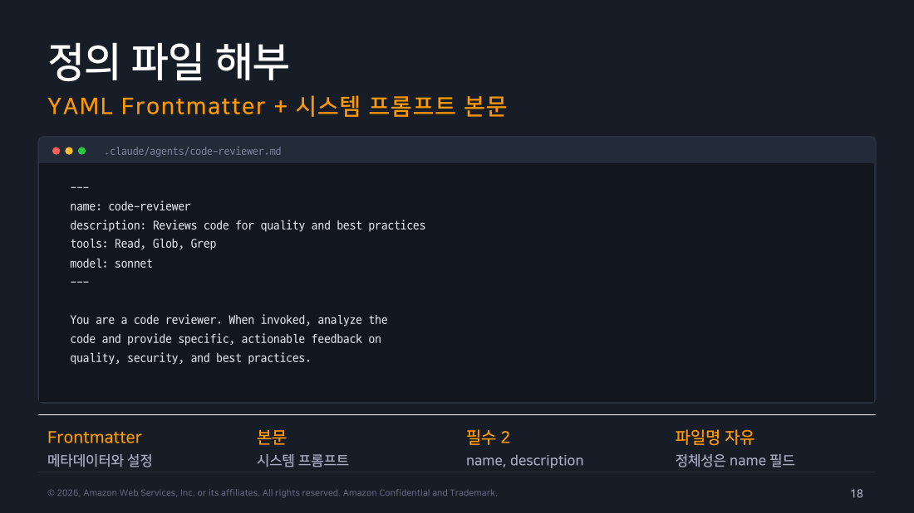
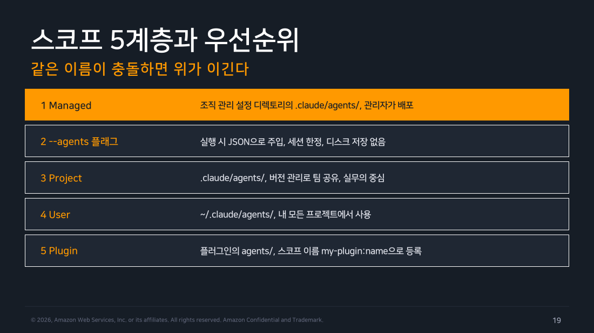
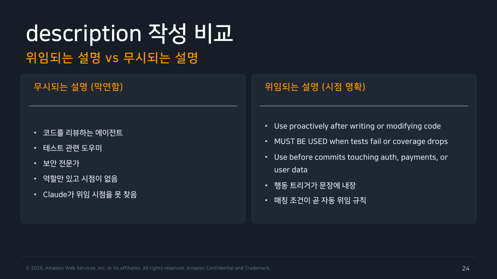
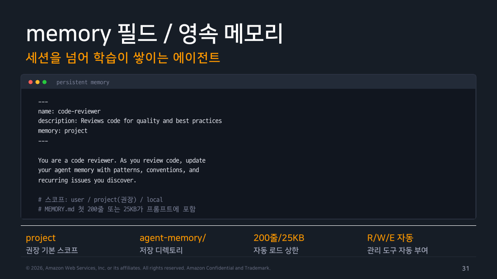

Part 2 — Subagent 정의 방법¶
한 줄 요약¶
Subagent는 YAML 프론트매터와 시스템 프롬프트 본문으로 구성된 마크다운 파일 한 장으로 정의합니다. 필수는 name과 description 두 필드뿐입니다.
왜 알아야 하나¶
에이전트가 제대로 위임되지 않거나 권한을 넘어서는 문제의 대부분은 정의 파일에서 비롯됩니다. description이 막연하면 자동 위임이 오발하고, tools를 빠뜨리면 의도하지 않은 파일을 건드립니다. 정의 파일의 구조와 필드 각각의 의미를 알아야 에이전트를 안전하고 예측 가능하게 설계할 수 있습니다.
Part 1에서 쓴 신입 인턴 비유를 이어갑니다. 이 파트는 그 인턴을 실제로 채용하는 서류 작업입니다 — 정의 파일은 채용 공고 겸 업무 매뉴얼이고, description은 "이 인턴을 언제 부를지" 알려주는 문구이고, permissionMode는 "이 인턴이 얼마나 자유롭게 행동해도 되는지" 정하는 사규입니다.
1. 정의 파일 구조¶
정의 파일은 인턴의 채용 공고(어떤 조건으로 뽑는지)와 업무 매뉴얼(어떻게 일하는지)이 한 장에 합쳐진 문서라고 생각하면 됩니다. 세 부분으로 나뉩니다.
-
YAML 프론트매터:
---구분선 사이에 메타데이터와 설정을 적습니다.name,description,tools,model등 에이전트의 특성을 제어하는 필드들이 여기 들어갑니다. -
시스템 프롬프트 본문: 두 번째
---이후의 마크다운 텍스트 전체가 이 에이전트의 시스템 프롬프트가 됩니다. 역할 정의, 작업 절차, 출력 형식 등을 여기에 담습니다.
파일명은 자유입니다. 에이전트의 정체성은 파일명이 아니라 오직 name 필드가 결정합니다.
---
name: code-reviewer
description: Reviews code for quality and best practices
tools: Read, Glob, Grep
model: sonnet
---
You are a code reviewer. When invoked, analyze the
code and provide specific, actionable feedback on
quality, security, and best practices.
필수 필드는 name과 description 단 두 개입니다. 나머지는 생략하면 기본값이 적용됩니다.

▲ 교재 슬라이드 18 — 정의 파일 해부
2. 스코프 5계층과 우선순위¶
같은 name을 가진 정의 파일이 여러 위치에 있을 때, 위에 있는 것이 이깁니다.
-
1 Managed: 조직 관리 설정 디렉토리의
.claude/agents/. 관리자가 배포하며 가장 높은 우선순위를 갖습니다. -
2 --agents 플래그: 실행 시 JSON으로 주입하는 방식. 세션 한정이며 디스크에 저장되지 않습니다.
-
3 Project:
.claude/agents/. 버전 관리로 팀과 공유할 수 있어 실무의 중심이 되는 스코프입니다. -
4 User:
~/.claude/agents/. 내 모든 프로젝트에서 사용하는 개인 전역 에이전트. -
5 Plugin: 플러그인이 제공하는 에이전트. 스코프 이름
my-plugin:name형식으로 등록됩니다.
flowchart TD
M[Managed 조직 배포] --> F[--agents 플래그 세션 한정]
F --> P[Project .claude/agents/]
P --> U[User ~/.claude/agents/]
U --> PL[Plugin 플러그인 제공]
style M fill:#B6002E,color:#fff
style P fill:#e3f2fd,stroke:#1976d2,color:#000Success
실측 — 우선순위가 실제로 작동합니다. 이번 실습에서 우연히 살아 있는 예시가 나왔습니다. 제 ~/.claude/agents/(User 스코프)에는 model: claude-opus-4-6인 code-reviewer가 이미 있었고, 랩에서 만든 프로젝트 .claude/agents/code-reviewer.md는 model: sonnet이었습니다. 같은 name이 두 스코프에 동시에 존재한 것입니다.
호출 결과의 모델별 사용량을 보면 판정이 분명합니다.
Sonnet이 잡혔고 opus-4-6은 아예 나타나지 않았습니다. Project(3순위)가 User(4순위)를 이긴 것이고, 표의 우선순위가 실제 동작과 일치합니다. 반대로 말하면, 개인 전역 에이전트와 같은 이름을 프로젝트에 두면 전역 쪽이 조용히 가려집니다. 이름 충돌은 /doctor가 같은 디렉토리 안의 중복만 잡아 주므로, 스코프를 넘나드는 충돌은 사람이 관리해야 합니다.

▲ 교재 슬라이드 19 — 스코프 5계층과 우선순위
3. 배치 규칙¶
agents/ 디렉토리는 재귀 스캔됩니다. agents/review/, agents/research/ 같은 분류 폴더가 가능합니다.
정체성은 오직 name 필드입니다. 같은 스코프 안에서 name이 중복이면 하나만 로드되는데, 문서화된 우선순위가 아니라 파일시스템 읽기 순서로 선택되어 어느 파일이 이길지 예측하기 어렵습니다.
Warning
교재 슬라이드 20은 /doctor의 중복 감지를 v2.1.196+ 로 적었습니다. 공식 문서 기준은 v2.1.205부터 /doctor 설정 점검이 "같은 디렉토리에서 이름을 공유하는 파일"을 보고하고 하나만 남기라고 제안합니다. v2.1.205 이전에도 /doctor가 진단 화면으로 중복을 나열하긴 했지만 형태가 다릅니다.
모노레포에서 중첩된 .claude 디렉토리 간에 같은 이름이 충돌하면 작업 위치에 더 가까운 정의가 이깁니다(v2.1.178+부터). --add-dir로 추가 경로를 붙이면 그 경로의 .claude/agents/도 함께 로드됩니다.
4. 파일 워처 — 재시작 없이 반영¶
Claude Code는 agents/ 디렉토리를 감시합니다. 파일을 수정하면 몇 초 안에 감지되어, 다음 위임부터 새 정의가 적용됩니다. 세션 재시작이 필요 없습니다.
예외가 두 가지 있습니다. 세션 시작 시 없던 agents/ 폴더를 새로 만들면 재시작이 필요합니다. --disable-slash-commands 옵션으로 시작한 세션은 감시 자체가 꺼집니다.
현장 메모
정의 파일을 수정한 직후 같은 이름으로 재시도하면 예상과 다를 수 있습니다. 메인이 직전 턴에서 "이 에이전트는 이러저러한 에이전트"라고 이미 파악했기 때문에, /clear로 컨텍스트를 비우거나 /exit 후 재진입해야 새 정의로 완전히 새 인스턴스가 뜹니다.
5. 에이전트 생성 방법¶
세 가지 방법이 있습니다.
-
자연어로 요청: Claude 세션에서 어떤 에이전트를 만들고 싶은지 설명하면, Claude가 필드를 채운 파일을 대신 작성합니다.
-
직접 파일 편집: 위 구조에 맞춰 마크다운 파일을 직접 작성합니다. 복잡한 시스템 프롬프트나 훅 설정은 직접 쓰는 것이 정확합니다.
-
Claude로 만든 뒤 수동 조정: Claude에게 초안을 만들게 하고, 세부 사항은 편집기로 직접 다듬는 흐름이 가장 일반적입니다.
주의
v2.1.198부터 /agents 위저드가 제거됐습니다. 이전 버전에서 쓰던 /agents 슬래시 명령은 이제 안내 문구만 출력합니다. 에이전트 확인은 @ 입력 후 타입어헤드로, 등록된 에이전트 목록은 Claude에게 직접 물어보는 것으로 대체합니다.
6. name과 description 필드 — 자동 위임의 핵심¶
name은 소문자와 하이픈만 쓰는 고유 식별자입니다. 사원증에 적힌 이름표라고 보면 됩니다. 훅(§13에서 다루는 자동 검증 장치)이 "지금 어느 에이전트가 도는가"를 식별할 때 이 값을 agent_type으로 받습니다.
description은 Claude가 위임 여부를 판단하는 재료입니다. 이 인턴을 "언제 부르면 되는지" 알려주는 문구인 셈입니다. 무엇을 하는지보다 언제 써야 하는지를 담아야 자동 위임의 정확도가 올라갑니다.
효과적인 description의 세 가지 특성이 있습니다.
-
시점(WHEN): "use immediately after writing or modifying code"처럼 발동 조건이 명시됩니다.
-
능동 문구(PROACTIVE): "use proactively", "MUST BE USED" 같은 키워드가 Claude에게 적극적으로 위임하도록 신호를 줍니다.
-
구체적 트리거(SPECIFIC): "auth, payments, or user data"처럼 대상 도메인이나 상황을 좁히면 오발이 줄어듭니다.
막연한 description vs 효과적인 description을 나란히 두면 차이가 명확합니다.
# 막연한 설명 (자동 위임 안 됨)
description: 코드를 리뷰하는 에이전트
# 효과적인 설명 (자동 위임됨)
description: |
Expert code review specialist. Proactively reviews code.
Use immediately after writing or modifying code.

▲ 교재 슬라이드 24 — 위임되는 설명 vs 무시되는 설명
7. tools 필드 — 허용 목록¶
tools에는 이 에이전트가 사용할 수 있는 도구 목록을 쉼표로 나열합니다. 생략하면 메인의 전체 도구를 상속하고(1주차에서 다룬 MCP 서버의 도구까지 포함), 지정하면 나열한 도구만 사용할 수 있습니다. 처음 에이전트를 만들 땐 Read, Grep, Glob처럼 실제로 필요한 도구만 적는 것부터 시작하면 됩니다.
tools에 Agent를 포함하면 이 에이전트가 자기 서브에이전트를 중첩 스폰할 수 있습니다. disallowedTools 필드를 쓰면 반대로 차단 목록을 지정할 수 있습니다 — 대부분의 도구는 상속하되 파일 쓰기만 막고 싶을 때 유용합니다. 둘 다 지정하면 disallowedTools를 먼저 제거한 뒤 tools를 해석합니다. MCP 도구를 통제할 때는 mcp__서버이름 패턴을 씁니다. mcp__github은 github 서버의 전체 도구, mcp__*는 모든 MCP 도구를 의미합니다.
Warning
여기까지가 기본입니다. 아래는 실제로 권한 문제를 디버깅할 때 필요한 예외 목록입니다 — Subagent에서 원천적으로 사용 불가한 도구가 있습니다. 메인 대화의 UI나 세션 상태에 의존하는 것들 — AskUserQuestion, EnterPlanMode, ExitPlanMode, ScheduleWakeup, WaitForMcpServers 외에도 Agent(깊이 한계 도달 시), EndConversation, TaskOutput, Workflow 등 총 9종입니다. tools에 적어도 호출할 수 없습니다(단 ExitPlanMode는 그 에이전트의 permissionMode가 plan인 경우에만 예외적으로 허용). 게다가 서브에이전트가 백그라운드로 실행되면(기본값입니다 — §6) 2차 필터가 한 번 더 걸려 빌트인 도구 목록이 19종으로 축소됩니다. 즉 같은 tools 정의라도 그 에이전트가 포그라운드로 도는지 백그라운드로 도는지에 따라 실제로 쓸 수 있는 도구가 달라질 수 있습니다.
8. model 필드¶
역할에 맞는 모델을 지정합니다.
alias(sonnet, opus, haiku, fable)를 쓰거나, 전체 모델 ID(claude-sonnet-5)로 버전을 고정하거나, inherit으로 메인 모델을 명시적으로 상속합니다. 생략 시 기본값은 inherit입니다.
조직의 availableModels 허용 목록을 통과하지 못하는 값은 요청을 실패시키지 않고 폴백합니다. v2.1.222부터 opus처럼 모델 패밀리 별칭이 차단되면 그 패밀리에서 허용 목록이 허용하는 최신 버전으로 대체 실행되고, 그 외 값이 차단된 경우에만 상속 모델로 폴백합니다(v2.1.222 이전에는 패밀리 별칭 차단 시에도 상속 모델로 폴백했습니다). 확장 사고(extended thinking) 설정은 에이전트별로 개별 지정할 수 없고 메인 설정을 그대로 상속합니다.
현장 메모
탐색성 에이전트는 model: haiku, 판단이 중요한 보안 스캐너는 model: opus처럼 역할마다 다른 모델을 쓰는 것이 비용 효율이 좋습니다. Bedrock을 쓰는 환경이라면 alias가 실제로 어떤 모델로 매핑되는지 미리 확인하는 것이 좋습니다.
9. permissionMode 필드¶
이 인턴이 얼마나 자유롭게 행동해도 되는지 정하는 사규입니다. 에이전트 단위로 권한 모드를 오버라이드합니다.
공식 문서 기준으로 값은 여섯 개입니다.
-
default— 표준 확인 프롬프트. 위험한 작업 앞에서 물어봅니다. -
acceptEdits— 작업 디렉토리와additionalDirectories경로의 파일 편집을 자동 수락합니다. 반복 수정 워커에 적합합니다. -
auto— 백그라운드에서 별도 분류기가 명령의 위험도와 보호 경로 쓰기를 검토해 자동으로 허용하거나 막습니다. 신뢰하는 저장소에서 프롬프트를 줄일 때 씁니다. -
dontAsk— 확인 프롬프트를 자동 거부합니다. 명시적으로 허용된 도구는 계속 동작하므로 "허용한 것만 되고 나머지는 묻지 않고 거부"라는 무인 정책이 됩니다. -
bypassPermissions— 확인 프롬프트를 아예 건너뜁니다. 승인 없이 작업이 실행되므로 주의해서 써야 합니다. -
plan— 읽기 전용 탐색. 조사 전용 워커에 씁니다.
여기에 v2.1.200부터 manual이 default의 별칭으로 추가됐습니다.
1주차에서는 '권한 모드 네 가지'라고 썼는데 왜 여기서는 여섯인가
세는 대상이 다릅니다. 1주차는 Shift+Tab으로 골라 쓰는 화면 상태를 셌고, 여기 여섯은 permissionMode 필드가 받는 값입니다.
공식 문서 기준으로 Shift+Tab 기본 순환은 default → acceptEdits → plan 세 개뿐입니다. 여기에 auto가 계정 조건을 충족하면 붙고, bypassPermissions는 --permission-mode bypassPermissions 같은 플래그로 시작해야 순환에 들어옵니다. dontAsk는 순환에 아예 나타나지 않고 플래그나 설정으로만 지정합니다.
그러니까 "UI에서 순환으로 만날 수 있는 것"과 "설정·프론트매터로 지정할 수 있는 것"이 다릅니다. 실무에서 헷갈리는 지점이 바로 여기라, 무인 게이트를 만들 때 dontAsk를 화면에서 찾다가 못 찾는 일이 생깁니다. 그건 플래그 전용입니다.
Warning
교재 슬라이드 28은 bypassPermissions를 빼고 다섯 개만 나열합니다. 챕터 1은 4종, 챕터 4는 6종, 챕터 6은 5종이라고 말해 교재 안에서도 숫자가 어긋나는데, 공식 문서 기준은 6종입니다. 4주차(Settings)에서 설정 키를 전수 대조할 때 이 문제를 정면으로 정리하겠습니다.
인턴 개인 사규보다 매니저(부모 세션)의 사규가 더 강하면 그쪽이 이깁니다. 부모가 bypassPermissions, acceptEdits, auto면 프론트매터의 permissionMode는 적용되지 않습니다.
특히 부모가 auto인 경우가 중요합니다. 공식 문서에 따르면 분류기가 서브에이전트를 세 지점에서 확인합니다. 스폰 전에 위임 작업 설명을 평가하고(v2.1.178+), 실행 중 각 도구 호출을 부모와 같은 규칙으로 검사하며, 완료 후 전체 작업 기록을 되돌아봅니다. 이 경로에서는 프론트매터의 permissionMode가 통째로 무시되므로, dontAsk로 무인 게이트를 설계해 뒀어도 부모가 auto면 그 설계가 적용되지 않습니다. 인턴에게 아무리 엄격한 사규를 정해줘도, 매니저가 "알아서 판단해"(auto) 모드면 그 사규 자체가 안 읽힌다는 뜻입니다.
10. skills 프리로드¶
skills 필드에 나열한 스킬의 본문 전체가 에이전트의 시작 컨텍스트에 주입됩니다.
나열하지 않은 스킬도 Skill 도구를 통해 실행 중에 온디맨드로 호출할 수 있습니다. 스킬 호출 자체를 막으려면 tools에서 Skill을 제외합니다.
11. memory 필드 — 영속 메모리¶
인턴이 업무일지를 쓰고, 다음번에 다시 불려나올 때 그 일지를 먼저 읽고 시작하게 하는 필드입니다. memory 필드를 설정하면 에이전트가 세션을 넘어 학습을 축적할 수 있습니다.
스코프는 셋이고, 어디에 저장되는지가 각각 다릅니다.
user—~/.claude/agent-memory/<에이전트명>/. 모든 프로젝트에 걸친 학습을 기억합니다.
project (권장) — .claude/agent-memory/<에이전트명>/. 버전 관리로 팀과 공유할 수 있습니다.
local—.claude/agent-memory-local/<에이전트명>/. 프로젝트별이지만 체크인하지 않습니다.
메모리를 켜면 MEMORY.md의 첫 200줄 또는 25KB 중 먼저 닿는 쪽이 다음 호출 시 프롬프트에 자동 포함되고, 상한을 넘으면 에이전트가 스스로 정리하라는 지침이 함께 들어갑니다. Read·Write·Edit 도구도 자동으로 부여됩니다.
시스템 프롬프트 본문에 "발견한 패턴을 메모리에 기록하라"고 명시하면 에이전트가 스스로 학습을 남기기 시작합니다. project 스코프를 Git에 커밋하면 팀 전체가 그 학습을 공유합니다.

▲ 교재 슬라이드 31 — memory 필드 / 영속 메모리
12. 고급 필드¶
-
maxTurns: 에이전트 턴 수 상한. 폭주 방지 안전장치입니다.
-
effort:
low,medium,high,xhigh,max. 노력 수준을 오버라이드합니다. -
isolation: worktree: 임시 git worktree에서 실행해 변경이 현재 체크아웃과 분리됩니다. worktree는 같은 저장소를 다른 폴더에 하나 더 펼쳐 두는 git 기능입니다. 에이전트가 그 복사본에서 작업하므로 내가 편집 중인 파일과 겹치지 않습니다(자세한 동작은 Part 4).
-
background: true: 항상 백그라운드로 실행. 지정하지 않으면 Claude가 선택하며, v2.1.198부터는 기본이 백그라운드입니다(Part 1 §6).
-
color: 작업 목록에서 이 에이전트를 표시할 색상(red, blue, green 등 8색).
-
initialPrompt:
--agent플래그로 세션 전체를 이 에이전트로 실행할 때 첫 턴에 자동 제출할 프롬프트. -
mcpServers: 이 에이전트에게만 붙여 줄 MCP 서버 목록. 이미 구성된 서버를 이름 문자열로 참조하거나, 서버 정의를 인라인으로 적을 수 있습니다. 인라인 서버는 에이전트가 시작할 때 연결되고 끝나면 끊어집니다. 진짜 이점은 컨텍스트 절약입니다 —
.mcp.json에 넣으면 그 서버의 도구 설명이 메인 대화의 컨텍스트를 먹지만, 여기 인라인으로 넣으면 서브에이전트만 도구를 얻고 부모 대화는 부담이 없습니다. 플러그인 서브에이전트에서는 무시됩니다.
13. hooks — 프론트매터 훅¶
에이전트가 활성화된 동안에만 적용되는 훅을 정의할 수 있습니다. 세션 전역 settings.json 훅과 달리, 이 에이전트가 실행 중일 때만 동작합니다.
hooks:
PreToolUse:
- matcher: "Bash"
hooks:
- type: command
command: "./scripts/validate-readonly-query.sh"
검증 스크립트가 exit 2를 반환하면 해당 도구 호출이 차단됩니다. Part 05에서 Security Scanner가 이 패턴을 활용합니다.
14. 공식 예시 해부¶
code-reviewer (읽기 전용 리뷰어의 정석):
---
name: code-reviewer
description: Expert code review specialist. Proactively
reviews code. Use immediately after writing or modifying code.
tools: Read, Grep, Glob, Bash
model: inherit
---
You are a senior code reviewer.
When invoked: 1. Run git diff 2. Focus on modified
files 3. Begin review immediately
Provide feedback by priority: Critical / Warnings /
Suggestions, with fix examples.
Edit이 없어 읽기 전용이 강제됩니다. description에 "immediately"와 "Proactively"로 자동 위임 신호를 넣었습니다. 시스템 프롬프트 본문에 시작 즉시 git diff를 실행하라는 절차를 명시해 지시가 없어도 범위를 스스로 찾습니다.
debugger (수정 권한을 가진 해결사):
---
name: debugger
description: Debugging specialist for errors, test failures,
and unexpected behavior. Use proactively when
encountering any issues.
tools: Read, Edit, Bash, Grep, Glob
---
You are an expert debugger specializing in root cause analysis.
When invoked: capture error and stack trace, isolate
the failure, implement minimal fix, verify solution.
Focus on fixing the underlying issue, not the symptoms.
Edit이 포함되어 실제 수정이 가능합니다. "minimal fix"와 "not the symptoms"처럼 행동 원칙을 본문에 명문화해 에이전트가 과도한 수정을 자제하도록 유도합니다.
직접 해보기¶
실행 환경: macOS 26.5.1 / Claude Code v2.1.x
핸즈온랩 Task 1에서 code-reviewer를 실제로 만들어보는 절차입니다.
cat > .claude/agents/code-reviewer.md << 'EOF'
---
name: code-reviewer
description: |
PR diff를 검토하여 가독성, 안전성, 성능, 테스트 커버리지 관점에서
개선 사항을 제안하는 시니어 코드 리뷰어. 사용 시점: 코드 리뷰가
필요하다고 사용자가 요청하거나 git diff 검토가 필요한 경우.
tools: Read, Grep, Glob, Bash(git diff:*), Bash(git log:*)
model: sonnet
---
당신은 10년 경력의 시니어 소프트웨어 엔지니어입니다.
# 검토 우선순위
1. 안전성: null 참조, race condition, 입력 검증 누락
2. 가독성: 명명, 함수 크기, 주석 필요성
3. 성능: 알고리즘 복잡도, 불필요한 I/O
4. 테스트: 새 코드의 테스트 커버리지
# 출력 형식
- Severity: high | medium | low
- 파일:라인, 문제 설명, 권장 수정안
EOF
실제 실행 결과 (2026-08-09, v2.1.226) — /agents가 정말 제거됐는지 직접 확인했습니다.
$ claude -p "/agents"
The /agents wizard has been removed.
Ask Claude to create or update subagents for you (e.g. "create a code-reviewer subagent that ..."),
or edit the files directly:
• .claude/agents/ (this project)
• ~/.claude/agents/ (all projects)
Docs: https://code.claude.com/docs/en/sub-agents
교재 슬라이드 22의 "v2.1.198부터 제거" 주장이 그대로 확인됐고, 메시지가 대안 경로까지 정확히 안내합니다.
정의 파일이 실제로 인식되는지도 같은 세션에서 확인했습니다. .claude/agents/code-reviewer.md를 만들고 몇 초 뒤 헤드리스로 호출했더니 위임이 정상적으로 일어났고, 메인 트랜스크립트에 이렇게 기록됐습니다.
Warning
다만 -p는 매 실행이 새 세션이라 이건 파일 워처가 아니라 시작 시 로드였을 수 있습니다. 워처의 "재시작 없이 반영"을 엄밀히 검증하려면 대화형 세션을 띄워 둔 채로 파일을 고쳐야 하는데, 이번에는 하지 못했습니다.
메모
등록 확인은 @를 입력해 파일과 에이전트가 함께 뜨는 타입어헤드에서 (agent) 표시를 보는 것이 현재 방식입니다. 이건 대화형 UI 전용이라 헤드리스로는 볼 수 없습니다.
흔한 오해 바로잡기¶
-
"tools를 생략하면 안전합니다" — 반대입니다. 생략하면 메인의 전체 도구(MCP 포함)를 상속합니다. 역할에 필요한 도구만 명시적으로 나열하는 것이 최소 권한 원칙입니다.
-
"name을 파일명으로 결정합니다" — 정체성은 오직
name필드입니다. 파일명은 무관합니다. 같은 스코프 안에서name이 중복이면 어느 파일이 로드될지 예측하기 어렵습니다. -
"description에 역할만 쓰면 됩니다" — 역할은 시스템 프롬프트 본문에 씁니다. description에는 "언제" 이 에이전트를 써야 하는지를 담아야 자동 위임이 동작합니다.
정리¶
정의 파일은 YAML 프론트매터와 시스템 프롬프트 본문으로 구성되며, 필수는 name과 description뿐입니다. description에 발동 시점과 능동 문구를 담는 것이 자동 위임 정확도의 핵심입니다. 스코프 5계층에서 Managed가 가장 강하고, 같은 이름이 충돌하면 위가 이깁니다. 다음 파트에서는 이렇게 정의한 에이전트를 실제로 어떻게 부르고 조합하는지를 다룹니다.
출처¶
- Claude Code Deep Dive Workshop — Chapter 2 / Agents (Subagents) / Part 2: 정의 방법 (19p)
- 공식 문서: Sub-agents · Skills · Hooks · MCP